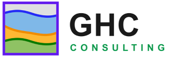

The complete STV documentation — also included in every download.
A Product of GHC Consulting

Copyright © 2019-2026 GHC Consulting
Last Revision: October 10, 2026
STV is a Java application and runs on any platform with a compatible Java runtime. The distribution includes a trimmed Java runtime, so you do not need to install Java separately. The requirements are:
The app has been tested on:
STV is distributed as a .zip archive containing the application, a trimmed Java runtime, launch scripts, and this documentation.
.zip archive.C:\apps\stv. ) to start the program.
) to start the program..zip archive.stv folder to your Applications directory, or run it in place. appears in the dock while the program runs, and a tray icon is available for quick access..zip archive.chmod +x stv.sh), and run it.No installer is required and nothing is written outside the folder you unzipped. To uninstall, simply delete the folder.
If instructions bore you, do the following:
.segy or .sgy).Read the rest of the documentation to understand what you are looking at.
STV (Seismic Trace Viewer) displays seismic traces stored in SEG-Y files, the standard exchange format of exploration seismology. It is a working tool, not a toy: it reads real field and processed data, shows every trace as a wiggle, and lets you inspect the headers that describe each trace.
The program was written by GHC Consulting, a hydraulic fracturing consultancy, for the unglamorous but essential job of looking at the data: checking that a SEG-Y file is what it claims to be, that the headers make sense, that the amplitudes are sane, and that the geometry hangs together before the data goes into processing or interpretation.
STV tries to do one thing well. It does not process, filter, or migrate data. It shows you the traces, quickly and honestly, so you can decide what to do next.
To start the program, run the launch script, or double-click its icon . The program opens a window with four major portions:
Before any data is loaded, the display shows the STV home panel: a summary of the mouse shortcuts (also listed under Mouse and Keyboard Shortcuts).
The rest of this section explains the menus, toolbar buttons, and dialogs that control the program.
Choose File > Open Folder  (or press Ctrl+O) and select a folder containing seismic data. The folder appears as the root of the file tree on the left. Click any
(or press Ctrl+O) and select a folder containing seismic data. The folder appears as the root of the file tree on the left. Click any .segy or .sgy file in the tree to load it; its traces are drawn in the display panel.
The File menu also keeps a list of up to 20 recently opened files and folders, so you can jump straight back to yesterday's data.
The toolbar carries a Big Endian checkbox. Classic SEG-Y files store binary values big-endian (most significant byte first), and STV assumes big-endian by default.
If a file loads but the traces look like white noise, or the amplitudes are absurd, the file is probably little-endian (allowed since SEG-Y revision 2.0). Uncheck Big Endian and the file is reloaded with the bytes swapped. Checking or unchecking the box reloads the current file immediately, so you can flip it back and forth until the data looks right.
See About SEG-Y for why byte order matters.
The toolbar buttons control the display. Hover over any button for a tooltip.
| Button | Action |
|---|---|
 |
Zoom in, both directions |
 |
Zoom out, both directions |
 |
Zoom in horizontally (more traces across the screen) |
 |
Zoom out horizontally |
 |
Zoom in vertically (stretch the time axis) |
 |
Zoom out vertically |
 |
Pan mode: drag the display to scroll through the data |
 |
Snapshot of the current view to the clipboard |
 |
Snapshot including side labels to the clipboard |
 |
Snapshot of the current view to a PNG file |
|
Snapshot including side labels to a PNG file |
 |
Toggle the display settings panel |
The display settings panel (toggled by the last button) controls how traces are drawn. Experiment freely; every control redraws the display immediately, and nothing you do there modifies your data file.
The View menu opens windows that show the numbers behind the wiggles.
File EBCDIC header: shows the 3200-byte textual file header as 40 lines of text. This is the human-readable description of the data set: client, line, reel, acquisition parameters, processing history. On old files it is encoded in EBCDIC; STV converts it for display. If this header is blank or garbage, the file may be corrupt or mistyped.
File binary header: shows the 400-byte binary file header as named fields: sample interval, samples per trace, data format code, and the other values that apply to every trace in the file. Check the sample interval and trace length here first when a file looks wrong; they are the most common liars.
Monitor trace header and Monitor trace sample open live monitor dialogs; see the next section.
Monitor trace header opens a dialog that follows your cursor: as you move across the display, it shows the 240-byte trace header of the trace under the cursor as named fields — trace sequence number, field record number, source and receiver coordinates, offset, CDP number, and the rest. This is the fastest way to answer "which trace am I looking at, and where was it shot?"
Monitor trace sample opens a dialog that shows the actual sample values of the trace under the cursor. Use it to check amplitudes quantitatively instead of eyeballing wiggle heights.
Both dialogs stay open while you work; move the cursor and the numbers update.
The four snapshot buttons capture what you see for reports and presentations. Two copy the image to the system clipboard ( ), ready to paste into a document; two write a PNG file (
), ready to paste into a document; two write a PNG file ( ) into the project's image folder, named automatically like
) into the project's image folder, named automatically like ss2026-10-10-13-26-21.png.
For each destination you can capture just the trace display, or the display including side labels, which adds the annotation panels around the traces. The labeled version is usually the one you want for a figure.
| Keys | Mouse | Action |
|---|---|---|
| Alt | Right click | Select a trace and pop up its menu |
| Alt + Shift | Drag | Zoom in on the dragged rectangle (release to zoom) |
| Alt + Shift | Click | Zoom out |
| Ctrl+O | Open a data folder | |
| Ctrl+Q | Exit the program |
The same shortcuts are shown on the home panel that appears when STV starts.
SEG-Y is the standard format for exchanging seismic reflection data, maintained by the Society of Exploration Geophysicists (SEG). It was developed in 1973 for storing single-line seismic data on magnetic tape, and the specification was published in 1975 (Barry et al.). Revisions followed in 2002 (rev 1) and 2017 (rev 2.0), but the skeleton of every SEG-Y file is unchanged:
| Section | Size | Contents |
|---|---|---|
| Textual file header | 3200 bytes | 40 lines of 80 characters: human-readable description of the data set. Originally EBCDIC; rev 1 allows ASCII. |
| Binary file header | 400 bytes | Binary values applying to the whole file: sample interval, samples per trace, data format code, and more. |
| Trace header | 240 bytes | Binary values describing one trace: sequence numbers, shot and receiver coordinates, offset, CDP, and more. |
| Trace data | samples × bytes/sample | The actual amplitude samples, in the format named by the binary header. |
Sample formats. The binary header's format code says how each sample is stored: 32-bit IBM floating point (the 1975 original), 32-bit integer, 16-bit integer, IEEE floating point, and — since rev 1 — 8-bit integer, among others. STV reads the common formats; if your file uses an exotic one, the binary header viewer will at least tell you which code it claims.
Byte order. Revisions 0 and 1 define all binary values as big-endian: the most significant byte comes first. Revision 2.0 additionally permits little-endian files (flagged in bytes 3297–3300 of the binary header), mostly for I/O performance on modern hardware (Agile Scientific). This is why STV has a Big Endian checkbox: when the wiggle looks like noise, the bytes are probably in the other order.
A note on honesty. The headers in a SEG-Y file are metadata about the data, written by whoever created the file. They can be wrong — sample intervals get mistyped, coordinate units get confused, EBCDIC headers get left blank. STV shows you both the headers and the traces so you can check one against the other. Trust, but verify.
Language and libraries: STV is written in Java (currently Java 21) using the Swing GUI toolkit, with the FlatLaf look-and-feel for a consistent modern appearance on Windows, macOS, and Linux (FormDev Software). It has no native code and no required third-party libraries beyond the UI theme, so the same program runs everywhere Java runs.
Rendering: traces are rasterized into an off-screen image and painted to the display, which keeps panning and zooming smooth even for large files. Only the visible portion is redrawn when you scroll or zoom.
File I/O: SEG-Y files are read directly with a built-in reader that handles the textual header, binary header, trace headers, and the common sample formats, in big- or little-endian byte order. File and path handling uses plain Java string operations, with no external dependencies.
Known idiosyncrasies:
Thanks to the Society of Exploration Geophysicists for maintaining the SEG-Y standard as an open specification, and to the authors of the free software used in building STV:
Any errors in this documentation are the author's own.
Distribution: STV is a product of GHC Consulting.
Disclaimer: No warranty expressed or implied. Use this software at your own risk.
STV displays seismic data as recorded; it does not verify the correctness of file headers, and header values shown are only as reliable as the files that contain them. STV is a viewing tool, not a substitute for professional geophysical judgment.